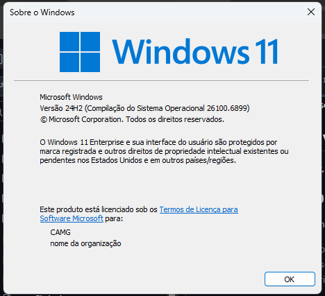
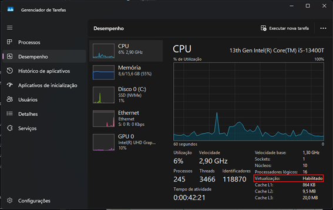
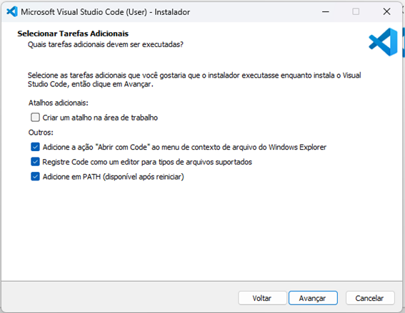
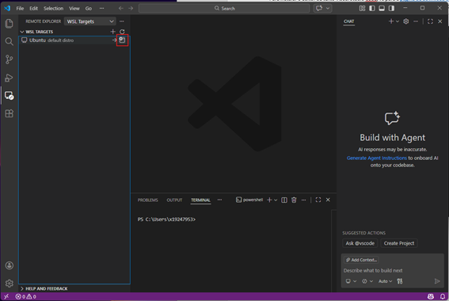
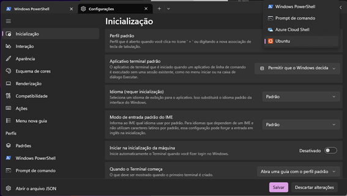
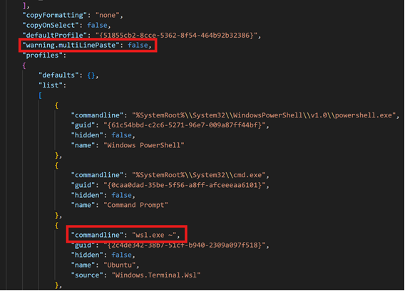
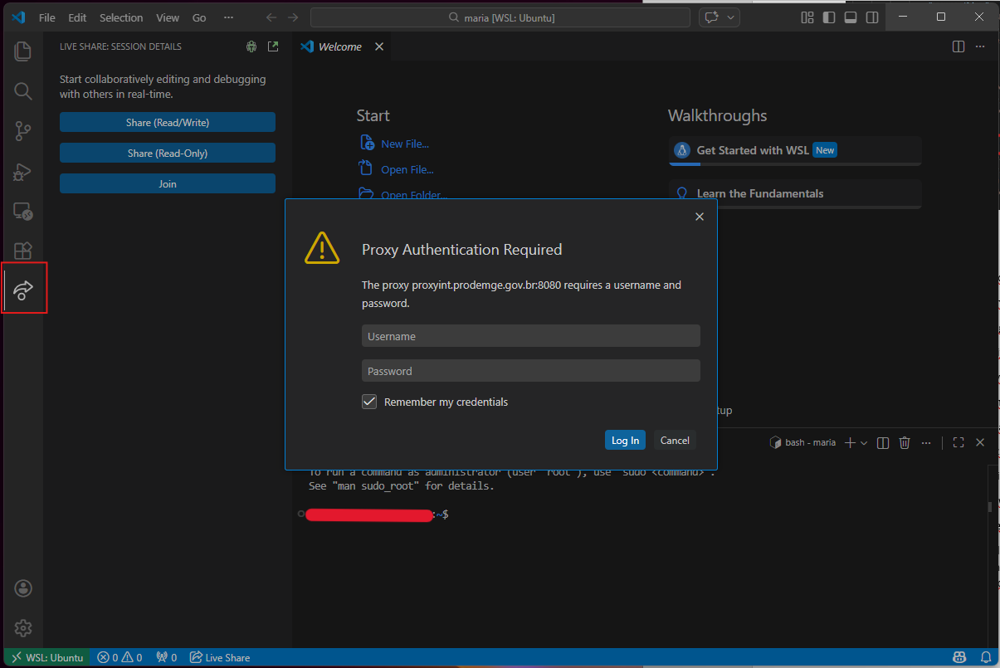
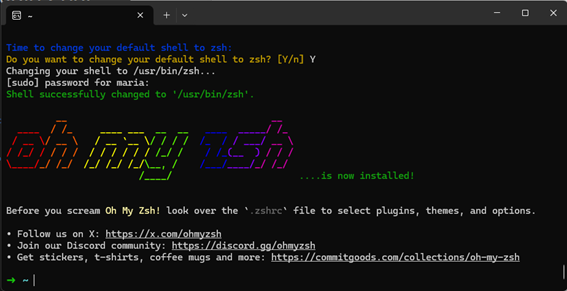

Setup da máquina⚓︎
Neste treinamento, montamos um passo a passo com instruções para configurar a máquina, com base no tutorial de setup do Le Wagon.
Você deve ter permissão de Administrador da máquina para conseguir realizar as instalações. Para isso, faça a solicitação conforme orientações "Permissão para Gerenciar o Próprio Computador" da carta de serviços Subgef.
1. Criação da conta no GitHub⚓︎
No GitHub, crie um conta, caso ainda não possua e informe:
- E-mail: preferencialmente e-mail pessoal;
- Password;
- Username: nome simples, fácil de lembrar, ficará visível para demais usuários.
Após a criação, adicione uma foto para que demais usuários possam reconhece-lo.
1.1 Autenticação em dois fatores⚓︎
Ative a autenticação em dois fatores do GitHub em: Settings > Password and authentication. Dentro da seção "Two-factor authentication", escolha o método que preferir.
Caso opte por "Authenticator app", é possível escolher o aplicativo "Authenticator" da Microsoft. Assim, será liberado um QR Code para que você escaneie e, sempre que fizer login, será requisitado um código, que pode ser resgatado no aplicativo.
2. Versão do Windows⚓︎
Para consultar a versão do Windows, pressione Windows + R e escreva winver. Ao apertar Enter ou clicar em "OK", ele irá te mostrar a versão do Windows do seu computador.

Caso seja Windows 11 ou Windows 10 (versão superior a 2004), pode-se prosseguir com o tutorial, mas caso contrário, deve-se conferir se há algum update disponível, utilizando os botões Windows + R e escrevendo ms-settings:windowsupdate.
3. Virtualização⚓︎
Outro ponto importante é consultar se a virtualização está habilitada. Para isso, pressione Windows + R, escreva taskmgr e consulte a aba de "Desempenho".

Virtualização desativada
Se a virtualização estiver desativada, é necessário acessar o BIOS/UEFI do computador para ativá-lo.
- Pressione
Windows+R - Digite
shutdown.exe /r /o /t 1 - Aguarde o computador desligar
- Clique em "Solucionar problemas"
- Clique em "Opções avançadas"
- Clique em "Configurações de firmware UEFI"
- Clique em "Reiniciar"
A opção de ativar a virtualização, na maioria das vezes, está nas configurações avançadas, nas configurações da CPU ou nas configurações do Northbridge. Ela pode estar nomeada como "Intel VT-x", "Tecnologia de virtualização Intel", "Extensões de virtualização", "Vanderpool" e entre outros no caso da Intel, ou como "Modo SVM" ou "AMD-V", no caso de AMD. Salve as alterações após a ativação e reinicie o computador através da opção apropriada.
4. Configurar proxy (CAMG)⚓︎
Caso esteja na CAMG, será necessário configurar proxy.
Para isso, pesquise no Windows por "Editar as variáveis de ambiente do sistema" e clique em "Variáveis de Ambiente...". Nas variáveis de usuário, clique em "Novo...".
O valor a ser informado da variável deve ser solicitado a algum membro da equipe. Esta informação também pode ser consultada no Bitwarden da assessoria.
O terminal deve ser reiniciado para aceitar a nova configuração.
5. Subsistema Windows para Linux (WSL)⚓︎
O WSL é o ambiente de desenvolvimento que será utilizado para executar o Ubuntu. Para instalar:
- Pressione
Windows+R - Digite
cmd - Pressione
Ctrl+Shift+Enter - Aceite a confirmação sobre a elevação de privilégio, caso apareça.
- Execute o comando
wsl --install
Solução de problemas para Windows 10
Para Windows 10 < 2004: instale o WSL 1 primeiro⚓︎
- Pressione
Windows+R - Digite
powershell - Pressione
Ctrl+Shift+Enter
Você pode ter que aceitar a confirmação do UAC sobre a elevação de privilégio.
Uma janela de terminal azul aparecerá:
* Copie os seguintes comandos um por um (Ctrl + C)
* Cole-os na janela do PowerShell (Ctrl + V ou clicando com o botão direito na janela)
* Execute-os pressionando Enter
 Se todos os três comandos foram executados sem nenhum erro, reinicie o computador e continue abaixo
Se todos os três comandos foram executados sem nenhum erro, reinicie o computador e continue abaixo 
 Se você encontrar uma mensagem de erro (ou se vir algum texto em vermelho na janela), por favor entre em contato com um professor
Se você encontrar uma mensagem de erro (ou se vir algum texto em vermelho na janela), por favor entre em contato com um professor
Para Windows 10 com WSL 1: Atualizar para WSL 2⚓︎
Se você estiver executando o Windows 10, atualizaremos o WSL para a versão 2.
Assim que o computador for reiniciado, precisamos baixar o instalador WSL2.
- Vá para a página de download
- Baixe o "pacote de atualização do kernel WSL2 Linux"
- Abra o arquivo que você acabou de baixar
- Clique em
Avançar - Clique em
Concluir
Se não encontrou nenhuma mensagem de erro, você está pronto
Se você encontrar o erro "Esta atualização se aplica apenas a máquinas com o subsistema Windows para Linux", clique com o botão direito no programa e selecione uninstall; você poderá instalá-lo normalmente desta vez.
Para Windows 10 com WSL 1: Torne o WSL 2 o subsistema Windows padrão para Linux⚓︎
Se você estiver executando o Windows 10, definiremos a versão padrão do WSL como 2.
Agora que o WSL 2 está instalado, vamos torná-lo a versão padrão:
* Pressione Windows + R
* Digite cmd
* Pressione Enter
Na janela que aparece, digite:
Se você vir "A operação foi concluída com sucesso", você pode fechar este terminal e continuar seguindo as instruções abaixo
Se a mensagem que você receber for sobre Virtualização, por favor entre em contato com um professor
Ativar recurso Windows da Plataforma de Máquina Virtual
Siga as etapas descritas aqui até você ativar a Plataforma de Máquina Virtual e o Subsistema Windows para Linux.
Ativar recurso Hyper-V do Windows
Siga as etapas descritas aqui até ativar o grupo Hyper-V
 Se você estiver executando o Windows 10 Home edition, o recurso Hyper-V não estará disponível para o seu sistema operacional. Não bloqueia e você ainda pode continuar seguindo as instruções abaixo
Se você estiver executando o Windows 10 Home edition, o recurso Hyper-V não estará disponível para o seu sistema operacional. Não bloqueia e você ainda pode continuar seguindo as instruções abaixo 
6. Ubuntu⚓︎
O processo anterior instala o Ubuntu e, neste terminal, é solicitado que você defina um nome de usuário e uma senha.
Observação: Ao digitar a senha, nada aparecerá na tela, pois é um recurso de segurança para mascarar a senha. Após digitar a senha, pressione Enter.
6.1 Versão do Ubuntu⚓︎
Para conferir a versão do Ubuntu, pressione Windows + R, escreva cmd e digite o comando wsl -l -v. Se a versão apontada não for a 2, escreva o comando wsl --set-version Ubuntu 2.
6.2 Conferencia do nome de usuário⚓︎
Por fim, para ter certeza que foi criado um usuário, escreva whoami no terminal do Ubuntu. Ao apertar Enter, ele deve retornar o nome que você deu ao seu usuário.
6.3 Configurar proxy⚓︎
O proxy também deve ser configurado no Linux, pois se trata de uma máquina diferente. Para isso, no terminal Ubuntu, abra o arquivo .bashrc no seu diretório pessoal com o nano:
Role a página até o final do arquivo e adicione uma linha para cada variável de ambiente:
Para o valor da variável, utilize o mesmo do tópico "4. Configurar proxy (CAMG)"
Salve o arquivo (no nano, pressione Ctrl + O, depois Enter e, em seguida, Ctrl + X para sair).
Recarregue a configuração para que as alterações entrem em vigor imediatamente ou feche e abra novamente o terminal:
Teste sua variável, substituindo "NOME_VARIAVEL" pelo nome da sua variável.
7. Visual Studio Code⚓︎
7.1 Instalação⚓︎
Para instalar o editor de texto Visual Studio Code, vá para a página de download do Visual Studio Code e clique no botão "Windows". Abra o arquivo baixado e o instale com as seguintes opções:

Quando a instalação for concluída, inicie o VS Code.
7.2 Conectando o VS Code ao Ubuntu⚓︎
Para fazer com que o VS Code interaja corretamente com o Ubuntu, no terminal do Ubuntu, cole o seguinte comando:
Na aba de "Remote Explorer", deve constar o Ubuntu. Você pode abri-lo na janela atual ou abrir uma nova. Dessa forma, na parte inferior da janela irá constar "WSL: Ubuntu".

8. Windows Terminal⚓︎
Windows 10: Instalar Windows Terminal
Abra a "Microsoft Store" e procure por "Windows Terminal" na barra de pesquisa. Selecione "Terminal do Windows" e clique em "Instalar".
 Não instale o Windows Terminal Preview, apenas o Windows Terminal!
Não instale o Windows Terminal Preview, apenas o Windows Terminal!
Desinstale a versão errada do Terminal do Windows
Para desinstalar uma versão errada do Terminal Windows, basta ir até a Lista de Programas Instalados do Windows 10:
- Pressione
Windows+R - Digite
ms-settings:appsfeatures - Pressione
Enter
Encontre o software para desinstalar e clique no botão desinstalar.
Assim que a instalação for concluída, o botão "Instalar" se torna um botão "Iniciar": clique nele.
Para tornar o Ubuntu o terminal padrão, com o Terminal do Windows aberto, pressione Ctrl + , e altere o perfil padrão para "Ubuntu". Clique em "Salvar".

Depois, clique em "Abrir o arquivo JSON" e faça as seguintes edições:
-
Acrescente a linha abaixo, após "defaultProfile": "{...}",:
-
Acrescente a linha abaixo, onde contém "name": "Ubuntu",:

Salve as alterações apertando Ctrl + S e feche o arquivo JSON.
Agora, ao abrir o Terminal do Windows, ele irá iniciar o Ubuntu por padrão.
9. Configurações do VS Code⚓︎
9.1 Extensões⚓︎
Copie e cole os códigos com as extensões abaixo no terminal Ubuntu.
code --install-extension ms-vscode.sublime-keybindings
code --install-extension emmanuelbeziat.vscode-great-icons
code --install-extension github.github-vscode-theme
code --install-extension MS-vsliveshare.vsliveshare
code --install-extension shopify.ruby-lsp
code --install-extension dbaeumer.vscode-eslint
code --install-extension Rubymaniac.vscode-paste-and-indent
code --install-extension alexcvzz.vscode-sqlite
code --install-extension anteprimorac.html-end-tag-labels
code --install-extension rayhanw.erb-helpers
9.2 Configuração do Live Share⚓︎
O Live Share é uma extensão do VS Code que permite compartilhar o código no editor de texto para depuração e programação em pares. Para configurá-lo, inicie o VS Code e, em seu terminal, execute o comando code.
Vá até a aba "Live Share" com ícone de seta.
Observação: Caso esteja na CAMG, será necessário informar seu login e senha da rede.

Após isso, clique em "Share (Read/Write)" e depois em "GitHub", para fazer login na sua conta. Um pop-up irá aparecer solicitando que seja feito o login, clique em "Permitir".
Assim, você será redirecionado para uma página no GitHub, em seu navegador, solicitando autorização do Visual Studio Code. Clique em "Continuar" e em "Autorizar GitHub". Irão aparecer alguns pop-ups adicionais, que você pode fechar.
10 Ferramentas de linha de comando⚓︎
10.1 Localidade⚓︎
Para verificar a localidade, que é um mecanismo que permite personalizar programas de acordo com seu idioma e país, digite locale no terminal do Ubuntu.
Se a saída não contiver LANG=en_US.UTF-8, execute o seguinte comando em um terminal Ubuntu para instalar a localidade em inglês:
Digite a sua senha, quando solicitado.
Caso não consiga mudar a localidade
Caso receba o aviso bash: warning: setlocale: LC_ALL: cannot change locale (en_US.utf-8), execute os comandos a seguir:
10.2 Zsh e Git⚓︎
Ao invés de usar o bash shell, será utilizado o zsh, bem como o git, para controle de versão.
Para instalá-los, junto com outras ferramentas, abra o terminal Ubuntu e execute os seguintes comandos:
Digite a sua senha, quando solicitado.
10.3 Instalação da CLI do GitHub⚓︎
Para instalar a CLI (interface de comando), execute os comandos abaixo e digite sua senha, quando solicitado:
curl -fsSL https://cli.github.com/packages/githubcli-archive-keyring.gpg | sudo dd of=/usr/share/keyrings/githubcli-archive-keyring.gpg
echo "deb [arch=$(dpkg --print-architecture) signed-by=/usr/share/keyrings/githubcli-archive-keyring.gpg] https://cli.github.com/packages stable main" | sudo tee /etc/apt/sources.list.d/github-cli.list > /dev/null
Para verificar se o gh foi instalado, execute gh --version.
11. Oh-My-Zsh⚓︎
Para instalar o plugin zsh, execute o seguinte comando no terminal Ubuntu:
Digite Y para a pergunta "Do you want to change your default shell to zsh?" e digite sua senha, quando solicitado.

11.1 Configurar proxy⚓︎
Refaça o passo a passo do tópico "6.3 Configurar proxy", substituindo "~/.zshrc" ao invés de "~/.bashrc".
12. Vinculando seu navegador padrão ao Ubuntu⚓︎
Para ter certeza que será possível interagir com o navegador instalado no Windows a partir do terminal Ubuntu, deve-se defini-lo como navegador padrão.
Google Chrome como navegador padrão
Execute o comando:
Caso tenha recebido um erro como ls: não é possível acessar..., execute os seguintes comandos:
echo "export BROWSER=\"/mnt/c/Program Files/Google/Chrome/Application/chrome.exe\"" >> ~/.zshrc
echo "export GH_BROWSER=\"'/mnt/c/Program Files/Google/Chrome/Application/chrome.exe'\"" >> ~/.zshrc
Caso não tenha recebido nenhum erro, execute os seguintes comandos:
Mozilla Firefox como seu navegador padrão
Execute o comando:
Caso tenha recebido um erro como ls: não é possível acessar..., execute os seguintes comandos:
echo "export BROWSER=\"/mnt/c/Program Files/Mozilla Firefox/firefox.exe\"" >> ~/.zshrc
echo "export GH_BROWSER=\"'/mnt/c/Program Files/Mozilla Firefox/firefox.exe'\"" >> ~/.zshrc
Caso não tenha recebido nenhum erro, execute os seguintes comandos:
Microsoft Edge como navegador padrão
Execute os comandos:
Reinicie seu terminal e, para conferir se o Browser foi definido corretamente, execute o comando abaixo:
[ -z "$BROWSER" ] && echo "ERROR: please define a BROWSER environment variable ⚠️" || echo "Browser defined 👌"
Caso não retorne a mensagem, tente outro navegador e não esqueça de resetar o terminal com o comando exec zsh.
13. Utilizando o GitHub CLI⚓︎
Primeiramente, vamos usar o GitHub CLI (gh) para conectar ao GitHub usando SSH, um protocolo para fazer login usando chaves SSH, ao invés de usuário/senha. Dessa forma, execute o seguinte comando no terminal do Ubuntu:
Não edite o "email".
O gh fará algumas perguntas:
-
Generate a new SSH key to add to your GitHub account?: Pressione
Enterpara pedir ao gh para gerar as chaves SSH para você.Se você já possui chaves SSH, verá Upload your SSH public key to your GitHub account?. Com as setas, selecione o caminho do arquivo de sua chave pública e pressione
Enter. -
Enter a passphrase for your new SSH key (Optional): Digite algo que você deseja e que você lembrará. É uma senha para proteger sua chave privada armazenada no disco rígido. Em seguida, pressione
Enter. Recomendamos que pressione Enter, para que não seja necessário digitar o "passphrase" a todo momento. -
Title for your SSH key: Você pode deixá-lo no "GitHub CLI" proposto, pressione
Enter.
Você obterá então a seguinte saída:
Siga as instruções de copiar o código e depois pressione Enter.
O navegador será aberto e irá solicitar que você autorize o GitHub CLI a usar sua conta GitHub. Aceite, informe o código que lhe foi passado e autorize o GitHub (será necessário informar o código da autenticação de dois fatores).
Para verificar se você está conectado corretamente, execute:
14. Dotfiles (configuração padrão)⚓︎
No terminal do Ubuntu, defina uma variável para seu nome de usuário GitHub:
Esta variável só é definida enquanto o terminal estiver aberto. Se ele for fechado, esta etapa deve ser refeita.
14.1 Configurar protocolo ssh⚓︎
Abra o arquivo "~/.ssh/config" no seu diretório pessoal com o nano:
Adicione, no arquivo, as linhas a seguir:
Host github.com
HostName ssh.github.com
Port 443
User git
IdentitiesOnly yes
AddKeysToAgent yes
IdentityFile ~/.ssh/id_ed25519
IdentityFile ~/.ssh/id_rsa
Feche o arquivo e execute o código:
Obs.: ao tentar autenticar no GitHub utilizando o CLI gh pode aparecer o erro:
could not prompt: Incorrect function.
You appear to be running in MinTTY without pseudo terminal support.
To learn about workarounds for this error, run: gh help mintty
Para isso, pode-se tentar utilizar o winpty antes do comando:
14.2 Fork do repositório Dotfiles⚓︎
A SPLOR utiliza um fork próprio do repositório original do Le Wagon, que contém as configurações padrão recomendadas pela equipe.
Utilize sempre o repositório corporativo splor-mg/dotfiles, que possui uma configuração padrão que pode ser utilizada, mas que deve ser clonada no computador, uma vez que a configuração é pessoal.
Para isso, execute os seguintes comandos:
14.3 Instalador do Dotfiles⚓︎
Execute o instalador dotfiles:
Ele pode te pedir para rodar a linha abaixo:
Isso fará com que você tenha novamente que autenticar no GitHub. Após isso, rode novamente a última linha que deu erro. Assim, você deve receber uma lista com seus e-mails registrados.
14.4 Instalador git⚓︎
Execute o instalador git:
Ele irá te solicitar seu nome (Nome Sobrenome) e seu e-mail, que deverá ser um dos listados anteriormente. Este email será exibido publicamente na internet, então, caso não queira que seu e-mail apareça em repositórios públicos aos quais você possa contribuir, selecione o endereço @users.noreply.github.com.
Agora reinicie o terminal executando:
15. Desativar prompt de senha SSH⚓︎
Para que a senha não seja solicitada sempre que for comunicar com um repositório distante, é necessário adicionar o plugin ssh-agent ao oh my zsh.
Para isso, primeiramente, abra o arquivo .zshrc, executando o seguinte comando no terminal Ubuntu:
No arquivo aberto, identifique a linha que começa com plugins= e adicione ssh-agent no final dessa lista.
Salve o arquivo .zshrc com Ctrl + S e feche o editor de texto.
16. Instalar o Poetry⚓︎
16.1 Voltando à home (Opcional)⚓︎
Primeiro, caso queira voltar o diretório para a home (~), digite o comando:
16.2 Atualização do Python (Opcional)⚓︎
Caso queira também, confira a versão atual do Python com python3 --version e atualize os repositórios e os pacotes com os comandos a seguir:
Instale a versão mais recente do Python disponível nos repositórios:
16.3 Instalação do Poetry⚓︎
Agora, instale o pipx com os comandos a seguir:
Abra um novo terminal ou aplique o PATH manualmente:
Verifique a instalação, consultando a versão através do comando pipx --version.
Por fim, instale o Poetry:
17. Conclusão⚓︎
Agora finalmente a sua máquina está configurada e você pode dar início aos seus trabalhos.
Espero que tudo tenha dado certo até aqui, mas, caso tenha encontrado algum problema, você pode procurar as soluções na internet e nos nossos issues ou perguntar se algum membro da equipe já passou por isso.
Desejo uma boa sorte na sua nova jornada!